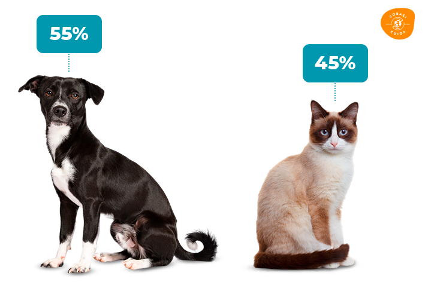

Cães e Gatos abandonados no Brasil em 2023
De acordo com a pesquisa do Cobasi Cuida, 55% dos animais abandonados resgatados em 2023 foram cães. Por sua vez, os gatos resgatados representam 45% dos casos relatados por ONGs e protetores independentes que participaram do estudo.
